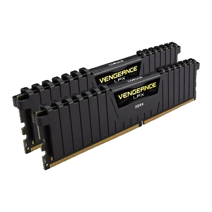
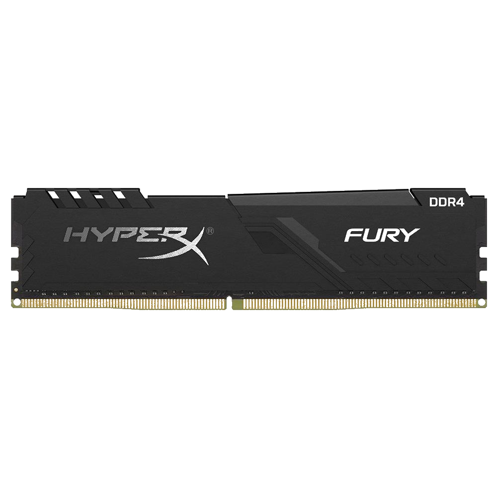

What Is Ram?
Random-access memory, or RAM, is one of the most important components in all devices, from PCs, to smartphones, to games consoles. Without RAM, doing just about anything on any system would be much, much slower. Not having enough for the application or game you’re trying to run can bring things to a crawl or even prevent them from running at all.
But what is RAM exactly? In a nutshell, it’s an extremely fast component that temporarily stores all the information your PC needs right now and in the near future. Accessing that information in RAM is insanely fast, unlike slower hard drives which provide longer-term storage.
*Click Those Corsair and Hyperx Icons to find out more information about that brand.

What Is Corsair?
AsusTek Computer Inc. is a Taiwan-based multinational computer and phone hardware and electronics company headquartered in Beitou District,
Taipei, Taiwan. Its products include desktop computers, laptops, netbooks, mobile phones, networking equipment, monitors, WIFI routers, projectors,
motherboards, graphics cards, melih, optical storage, multimedia products, peripherals, wearables, servers, workstations, and tablet PCs. The company is also an
original equipment manufacturer (OEM).
*The Photo Seeing on the above is the Corsair's one of the powerful Ram version = Corsair Dominator

What Is Hyperx?
AMD is the second largest maker of personal computer microprocessors after Intel. They also make flash memory, integrated circuits for networking devices, and programmable logic devices. AMD reports that it has sold over 100 million x86 (Windows-compatible) microprocessors. Its Athlon (formerly called the "K7") microprocessor, delivered in mid-1999, was the the first to support a 200 MHz bus. In March, 2000, AMD announced the first 1 gigahertz PC microprocessor in a new version of the Athlon.
*The Photo Seeing on the above is the Hyperx's one of the powerful MotherBoard version = Hyperx The Destroyer